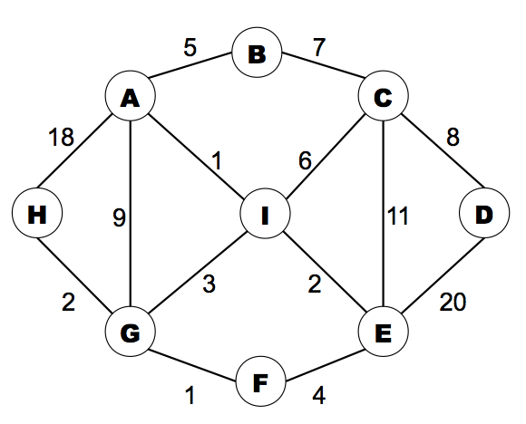
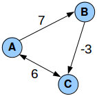
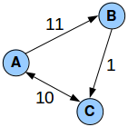
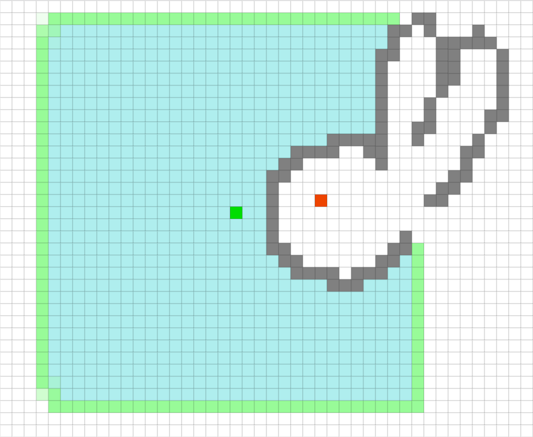
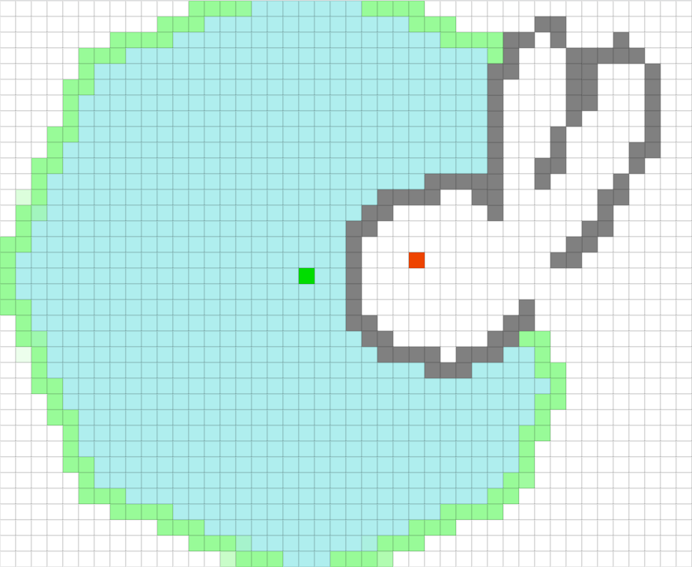
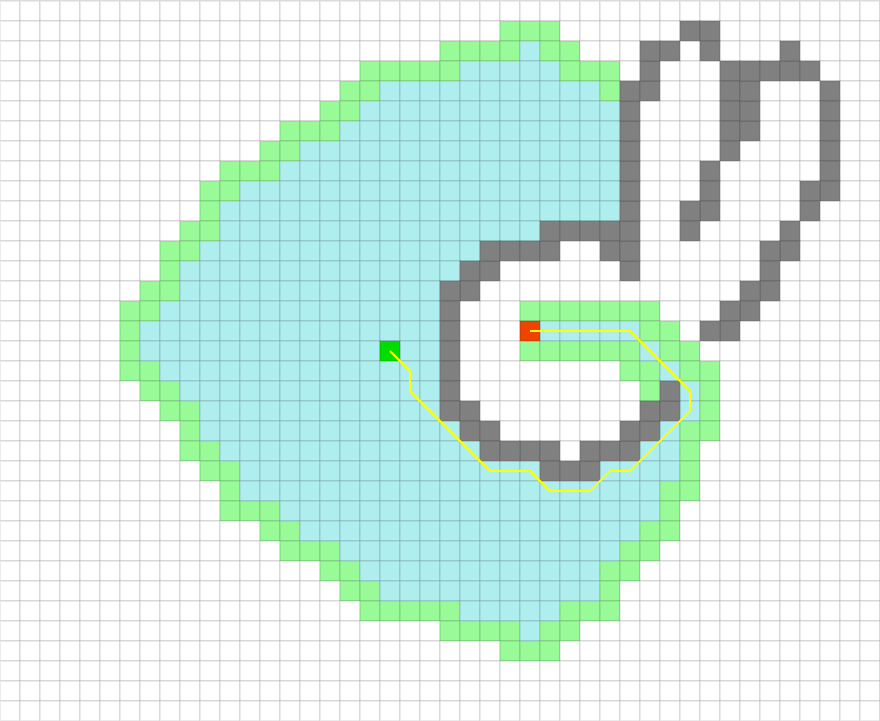
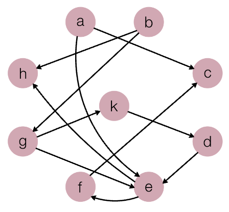
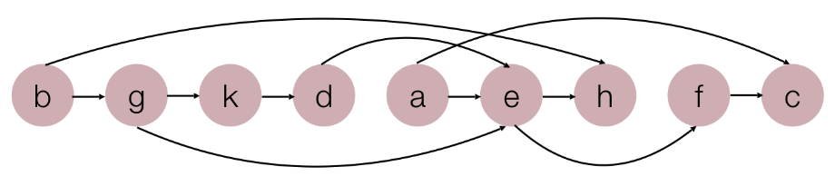
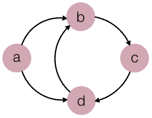

Lecture Video
Contents
1. Dijkstra's Algorithm
2. Finding the Smallest dist[i] Value: Runtime Considerations
3. Supplementary Dijkstra's Algorithm and the Negative Edge Weight Problem
4. Supplementary A Dijkstra Modification That Doesn't Work
5. Supplementary Dealing with Negative Edge Weights: Bellman-Ford
6. Further Runtime Considerations: Repeated Minheap Insertions (or Deletions)
7. A* Search Algorithm
8. Topological Sort
9. Cycles Topological Sort
10. Topological Sort Code
11. What's next?
12. Exercises
Dijkstra's Algorithm
Attachment: dijkstra-slides.pdf
We started class today with an exploration of Dijkstra's "single-source shortest path algorithm." Whereas BFS can find the shortest path from one vertex to another in an unweighted graph (we saw that last Friday), Dijkstra's algorithm finds shortest paths in weighted graphs. Moreover, Dijkstra finds the lowest-cost path from some source vertex to every other vertex in a graph! That is, when our algorithm is finished running on a graph with vertices v1, v2, ... vn, we will have found:
- the shortest path from source to v1
- the shortest path from source to v2
- ...
- the shortest path from source to vn
(Important note!) When we say "shortest path" in the context of Dijkstra's algorithm, we're referring to a lowest-cost path -- so, we're taking into consideration not the number of edges in a path (which is our traditional definition of "path length"), but the sum of the weights of those edges. For example, in the following diagram, the shortest path from A to H is not A → H (which has a cost of 18). Rather, it is A → I → G → H (which has a total cost of 6):

In contrast, for the graph above, BFS would have found A → H as the shortest path from A to H.
(Important note!) A key limitation of Dijkstra's algorithm is that it does not work on graphs with negative edge weights. We saw this in class today.
In the graph above, if we choose A as our source vertex, the shortest paths discovered by Dijkstra's algorithm will be:
| lowest-cost path | total cost (sum of edge weights) |
|---|---|
| A → B | 5 |
| A → I → C | 7 |
| A → I → C → D | 15 |
| A → I → E | 3 |
| A → I → G → F | 5 |
| A → I → G | 4 |
| A → I → G → H | 6 |
| A → I | 1 |
Finding the shortest path from some source vertex to every vertex in a graph has so many potential applications, such as:
- transmitting a message from a single computer in a network to every other computer in the network as quickly as possible
- shipping goods from a central distribution center and taking the shortest path possible to all destinations
- modeling the spread of infectious diseases through social networks
... and more! The sky is the limit with all the interesting and awesome problems we can model using graph theory.
For a walkthrough of the algorithm, see the slides attached above.
Finding the Smallest dist[i] Value: Runtime Considerations
Each iteration of Dijkstra's algorithm asks us to find which of the unvisited nodes has the smallest dist[i] value associated with it. It might seem tempting to use a priority queue for that. After all, serving up the element with the smallest priority associated with it is what priority queues are really good at!
There's a problem with using a priority queue to drive Dijkstra's algorithm, though: When we process a node, we check thedist[i] values associated with that node's unvisited neighbors and update them if appropriate. Those dist[i] values serve as the priorities that determine where those nodes are located in our priority queue, and updating them is not something that we cannot do efficiently with a traditional implementation of that data structure, which does not permit us to go rummaging around inside of it to find arbitrary values. (The Stanford PriorityQueue allows that, but it's an O(n) operation, which is very expensive for a data structure that has O(log n) worst-case runtimes for all its other key operations.)
So, we have a few options:
- If we want to update the priority associated with some node, remove elements from our priority queue until we find that node, then add it back in with the updated priority -- along with all the other elements we just removed. This is clearly absurd. Doing that for a single node would have a worst-case runtime of O(n log n) (where we end up pulling all n nodes out in order to find the one we're looking for), and we might want to do this for multiple nodes (not just one) in each iteration of Dijkstra's algorithm. Yikes!
- Use a priority queue, but don't bother updating the priorities associated with the nodes it contains. Instead, just add new copies of the nodes any time you update their priorities. Those new copies (with lower priorities) will percolate to the top while the old copies (with higher priorities) linger in the bottom. Effectively, we let a bunch of outdated trash accumulate in the minheap. Having extra clutter in our minheap isn't the best for our runtimes, but it's also not the worst thing I've seen, and this approach gets points for being super whimsical and a bit Bohemian. There's always a possibility that we'll pull out some node that we've already processed (with a higher, outdated priority), but we can just keep track of the nodes we've processed and discard any duplicates as we pull them out of the minheap. At worst, we end up with O(n2) items in our minheap with this approach (that's where all the unvisited nodes have their dist[i] values updated/improved at every iteration of the algorithm), and our runtime for Dijkstra's algorithm becomes O(n2 log n2) as a result -- and since log n2 = 2 log n (a super rad property of logs), we can actually rewrite that runtime as O(n2 log n).
- Find a priority queue that supports average-case O(1) updates to the priority of an element that is already in the queue. (A Fibonacci heap will do the trick.) If we do that in conjunction with an adjacency list representation for your graph (instead of an adjacency matrix), we can get the runtime down to O(|E| + n log n), where |E| is the number of edges in the graph. If you want to do a deep dive on those runtime details, see the Wikipedia article on Dijkstra's algorithm.
- Just use an unsorted array. That's what Dijkstra did originally. Finding the smallest dist[i] value in an unsorted array takes O(n) time, and we can remove an item from an unsorted array in O(1) time by simply swapping the last element of the array into the position we're removing from. (There's no need to scooch a bunch of elements over to fill in the space we are creating by removing an element. We only scooch when we're trying to preserve order, and since the array is unsorted in this case, we don't have to worry about that.) We end up doing n iterations of Dijkstra's algorithm in this approach (one for each node that gets processed), and the runtime for each iteration is O(n), so the algorithm has an overall runtime of O(n2) with this approach -- better than the O(n2 log n) approach described in #2 above. For the purpose of comparing this runtime to the approach in #3 above, note that the number of edges in a complete graph is O(n2), so approach #3 can approach an O(n2) runtime in the worst case, but it can be faster if the graph is more sparse than that.
(Key take-away!) Some of the details above (like the idea of using a Fibonacci heap to achieve an O(|E| + n log n) runtime for Dijkstra's algorithm) are a bit beyond the scope of the class and are included more as a reference should you want to do a deeper dive into this algorithm, the nuances of its implementation details, and the runtime implications of those implementation decisions. The main take-aways here are:
- A regular old priority queue might seem like a logical choice of data structure for implementing this algorithm, but it's not the most efficient approach because updating the priorities of existing elements in a traditional priority queue is an expensive operation.
- We can just use an unsorted array to keep track of our priorities, and that leads to an implementation of Dijkstra's algorithm that has an O(n2) runtime. (You should totally code that up, by the way.)
Supplementary Dijkstra's Algorithm and the Negative Edge Weight Problem
I mentioned in class today that Dijkstra's algorithm doesn't work on graphs that have negative edge weights. Check out what happens if we try running it on one that does:

If A is our source vertex, here is how the dist array changes as we run Dijkstra's algorithm (where dist is the array of values associated with each vertex):
Immediately after initialization: {0, ∞, ∞}
After visiting A and considering its (unvisited) neighbors: {0, 7, 6}
After visiting C and considering its (unvisited) neighbors: {0, 7, 6}
After visiting B and considering its (unvisited) neighbors: {0, 7, 6}
Notice that the minimum cost listed for reaching C from A (6) does not reflect the cost of the path A → B → C (4), which is smaller. That's because when we visit vertex B, its neighboring vertices are already marked as visited, and so we don't update dist[v] for any neighboring vertex, v. The mere presence of a negative edge weight has thrown off Dijkstra's algorithm.
With a graph this small, it might be tempting to say that we can recover from this problem. We might propose that when we visit vertex B, we could just peek at its visited neighbor, C, see that 7 - 3 would give us a better value than what we have there, and go ahead and update that 6 to a 4. The problem with this approach is that if C had other neighbors, we would then need to re-process C to see if we could use this new, smaller value to find shorter paths to those neighbors as well. There's no telling how many times we might need to re-process each node in that fashion if we were to allow those updates to continue, and that could dramatically increase the algorithm's runtime. This is not the way.
Supplementary A Dijkstra Modification That Doesn't Work
A not altogether uncommon proposal that I encounter for modifying Dijkstra's algorithm to work with negative edge weights is as follows: Find the minimum edge weight in the graph (call it x), and then add (|x| + 1) to every edge weight in the graph. Run Dijkstra's algorithm. When it's finished, subtract (|x| + 1) from your resulting shortest path values (the values in the dist array), except for the one stored for the source vertex.
Check out what happens with this algorithm, though. Here's the new version of the graph from the previous example, adjusted to add (|-3| + 1 = 4) to each edge weight:

When we perform Dijkstra's algorithm, we get the following dist arrays:
Immediately after initialization: {0, ∞, ∞}
After visiting A and considering its (unvisited) neighbors: {0, 11, 10}
After visiting C and considering its (unvisited) neighbors: {0, 11, 10}
After visiting B and considering its (unvisited) neighbors: {0, 11, 10}
After the algorithm concludes and we subtract (|-3| + 1 = 4) from each result (except at the source): {0, 7, 6}.
Clearly, this doesn't produce the desired solution, which is {0, 7, 4}. The conversion of negative edge weights in many (all?) cases prevents us from doing anything useful with them at all.
Supplementary Dealing with Negative Edge Weights: Bellman-Ford
Someone asked me after class today about how we can solve the single-source shortest paths problem if our graph has negative edge weights. One possibility is to use the Bellman-Ford algorithm, but it comes at a cost: the runtime is O(n3), as opposed to Dijkstra's runtime of O(n2). If you're interested, you can read more about that algorithm at the following links:
Note that if we have a negative cycle in a graph (or a single negative edge weight in an undirected graph, which we could run back and forth across in order to effectively produce a negative cycle), Bellman-Ford won't necessarily be of use; there is no (finite) shortest path between any two nodes that are a party to a negative cycle in a graph, because we can just keep pumping that negatively cycle infinitely to get better and better results.
Further Runtime Considerations: Repeated Minheap Insertions (or Deletions)
(Not covered in class, but I would like everyone to have passing familiarity with this idea.) When inserting n elements into a minheap, it might be tempting to say that since the worst-case runtime for insertion is O(log n), the overall runtime for inserting all elements must be O(n log n). After all, we could encounter that O(log n) runtime for each of our n insertion operations, no?
In fact, no! We cannot encounter that worst-case runtime of O(log n) for the first several (or however many) insertions because there aren't even n elements in the minheap yet. The worst-case runtime for each insertion is more accurately represented as O(log k), where k is the number of elements (out of n total) that we have inserted into the minheap so far. Since k is changing (1, 2, 3, ...), our runtime for all those insertions (adding up the time for each individual insertion) should be something along the lines of the following:
There's a rule for logs that says log(a) + log(b) = log(ab). Applying that repeatedly to the summation above, we get:
Finally, Stirling's approximation gives us:
The first term on the right-hand side of that equation is the dominant one, and so our runtime is O(n log n).
It might seem silly to go through all that trouble just to come up with the O(n log n) runtime, which is what we got at first glance by just multiplying the insertion runtime, O(log n), by the number of insertions, n. The reason it's important to give that summation careful consideration, however, is because we saw earlier this quarter how wishy-washy, hand-wavy analysis can lead us to overestimates of runtimes. Recall that when we first looked at the heapify algorithm, the temptation was to say, "We've got an O(n) for-loop calling an O(log n) percolate-down operation, so the runtime must be O(n log n)." However, we saw that O(n log n) was an overestimate of the runtime in that case. That's the one where the runtime actually ended up being O(n).
The heapify result should give us pause about engaging in that kind of analysis -- especially when the size of our data structure is changing. So, I wanted you to see how to analyze this one a bit more formally.
(Key take-away!) is
.
A* Search Algorithm
For the purpose of pathfinding (searching for a shortest path from a specific source node to a specific target node in a graph), one shortcoming of Dijkstra's algorithm is its willingness to explore in every direction from its source vertex with myopic focus on finding short paths to all the nodes it encounters, but no regard for whether it's making significant strides toward the target node.
We saw that on Friday (and again in class today) with the following pathfinding visualization tool:
BFS is painfully slow in that particular example, and while Dijkstra's algorithm is an improvement, it still explores without any bias in favor of nodes closer to the goal (or against nodes farther away). In the images below, Dijkstra appears very similarly to BFS, but explores the graph in a more radial shape. In the graphs being explored by these algorithms, the nodes represent the large pixels, and the weights of all edges are equal.
In the images below, source node is green, target node is red, gray nodes act as walls, and blue nodes surrounded with green border are the space that has been searched so far:
Breadth-First Search

Dijkstra's Algorithm

The A* search algorithm (pronounced "a-star") is very similar to Dijkstra's algorithm, except the priority for each node combines edge weights with a heuristic that nudges the search toward the goal. We traced through an example of this in class today. For details, see timestamp 30:31 through 45:26 in today's lecture.
Here we can see an example of A* in action. Notice that it explores fewer nodes than BFS and Dijkstra' algorithm and finds the shortest path to the goal faster. It also does not explore quite as far in northwesterly and southwesterly directions as the other two algorithms:
A* Search Algorithm

A few notes about A*:
- In order to use A*, we need awareness of a particular target node we're trying to reach and some way of measuring whether we're getting closer to that target node. (Thank you to the person who asked about this in class today!)
- While A* biases search toward the goal, it doesn't completely prohibit exploration of nodes in the opposite direction of the goal. That can be seen in the diagram above, where the search expands westward (but not quite as far northwest or southwest as BFS and Dijkstra did). This is actually a good thing! Even if we want to drive, say, north from Palo Alto to San Francisco, an optimal route might first take us a tiny bit south to get us to a nearby on-ramp for a freeway that will get us to our destination quickly.
- Unlike Dijkstra's algorithm, A* does not find the shortest path from a source node to every other vertex in the graph; it is only looking for the shortest path to the target node, and that is the only one for which it is guaranteed to find a lowest-cost path (pursuant to certain conditions; see the following bullet point).
- In order to ensure A* finds the shortest path from the source node to the target, our heuristic needs to be "admissible" (meaning that it never overestimates the actual cost to get to the goal). I touched on that briefly in class today, but if you're interested in exploring that idea in more detail, I've included some readings at the bottom of today's notes.
Topological Sort
At the end of class, I returned to the idea of topological sort, which we touched upon briefly last Friday.
A topological sort is an ordering of vertices in a directed graph where we can only list some node, j, after we have listed all nodes i where there is an edge from i to j in the graph. The word "ordering" here refers to a permutation (or arrangement) of our vertices. A valid topological sort must contain every node in our graph exactly once. If any node is missing, or if a node is listed more than once, that's not a valid topological sort.
For example, in the graph below, node h has two incoming edges: one from b, and one from e. Accordingly, any valid topological sort for this graph must list nodes b and e before listing node h:

One valid topological sort for this graph is as follows:
b g k d a e h f c
If we rearrange these nodes into a straight line in that order (without adding or removing any edges), we see a sort of flow in which all edges point to the right, never the left:

(Important note!) A topological sort does not have to correspond to a valid path through the graph!
Here are two potential applications for topological sort:
- Suppose the nodes in our graph represent tasks on a to-do list, and there's an edge from node x to node y if we need to complete task x before we can move on to task y. (For example, if x is "buy flour" and y is "bake cookies," we need to do x before y, assuming we don't already have enough flour at home.) A topological sort would give us an order in which we could execute our tasks without having any unmet dependencies before diving into each one.
- Suppose the nodes in our graph represent courses, and there's an edge from node x to node y if x is a prereq for y. A topological sort would give us an order in which we could take those individual courses without ever enrolling in one that still had unsatisfied prereqs.
Cycles and Topological Sort
Note that if a graph has a cycle, then it has no valid topological sort. Consider, for example, the following graph. A topological sort of a graph must include every node in that graph exactly once, but there is no way for us to list nodes B, C, or D in this example because of the cyclical dependencies in that part of the graph:

Topological Sort Code
Here's an implementation of topological sort that I wrote this evening for your consideration. It assumes the function is a member of a Graph class that has _numNodes and _matrix member variables (the number of nodes in the graph and an adjacency matrix that uses booleans to indicate whether there is an edge from one node to another).
void Graph::printTopologicalSort()
{
// First, count how many incoming edges each node has. All our nodes are numbered
// 0 through _numNodes - 1, even though this function later assumes we have labels
// associated with each node (such as A, B, C, and so on). The following syntax, not
// covered in class this quarter, initializes all the values in our array to 0 to
// begin with.
int incoming[_numNodes] = {};
for (int i = 0; i < _numNodes; i++)
{
for (int j = 0; j < _numNodes; j++)
{
// If _matrix[i][j] is true, we have an edge from i to j. So, increment the
// number of incoming edges at node j.
if (_matrix[i][j])
{
incoming[j]++;
}
}
}
// Now check which nodes have no incoming edges. Those are the ones we can choose
// from when selecting the first node for our topological sort, since they have no
// unsatisfied "prerequisites," so to speak. We store them in a queue -- not because
// their order matters (it doesn't), but because this is just a convenient and easy-
// to-use container for O(1) insertions and removals.
Queue<int> q;
for (int i = 0; i < _numNodes; i++)
{
if (incoming[i] == 0)
{
q.enqueue(i);
}
}
// This vector will store our final topological sort. We postpone printing it until
// we know whether we're able to process all nodes (which we won't be able to do if
// there's a cycle).
Vector<int> result;
while (!q.isEmpty())
{
// Pull out a node and add it to the topological sort we're building.
int current = q.dequeue();
result.add(current);
// If there is an edge from the current node to another node in the graph (let's
// call that other node 'i'), then 'i' has one less incoming edge that is
// preventing us from processing that node. Let's loop through the current node's
// row in our adjacency matrix to see which nodes it leads us to.
for (int i = 0; i < _numNodes; i++)
{
if (_matrix[current][i])
{
--incoming[i];
// If the decrement above causes this counter to reach 0, then we've
// just satisfied the final "prerequisite" for node i and can add it to
// the queue of nodes that are ready for processing.
if (incoming[i] == 0)
{
q.enqueue(i);
}
}
}
}
// If our final result does not have every node in our graph, then the graph must
// have a cycle. In that case, there is no valid topological sort, so we throw an
// error.
if (result.size() != _numNodes)
{
error("Graph contains cycle in printTopologicalSort()!");
}
// If we get here, all nodes were processed, and we have a valid topological sort
// to print. Here, I assume the existence of a _nodeNames vector that has a label
// for each node in the graph. These could be simple labels (A, B, C) or more
// elaborate strings ("San Francisco", "Palo Alto", "Mountain View").
cout << "Topological Sort:" << endl;
cout << "=================" << endl;
for (int i = 0; i < result.size(); i++)
{
int current = result[i];
cout << " - " << _nodeNames[current] << endl;
}
}
What's next?
Wednesday is our course wrap-up where I'll put a bow on some of the topics we've talked about this quarter, share some expectations for the final exam (and other end-of-quarter logistics), and talk a bit about what comes next in life after 106B.
On Friday, Julie, Clinton, and I will host an AMA where we'll field any questions you might have for us.
Exercises
1. Code up Dijkstra's algorithm! Start by writing a function that can read a graph from a text file into an adjacency matrix. An adjacency matrix isn't always the best representation to use for a graph (remember, for a sparse graph, the adjacency matrix has a lot of wasted space), but I'm suggesting that here because it's a fairly straightforward one to work with in code.
2. Be sure to review the implementation of topological sort included in the notes above. After taking a break from reading these notes, implement that algorithm from scratch. Challenge yourself to do so without looking back at these notes.
3. What is the runtime for the implementation of topological sort given in today's lecture notes?
4. Be sure to review the section titled "Further Runtime Considerations: Repeated Minheap Insertions (or Deletions)" in today's notes.
5. If you want to learn more about shortest path algorithms and pathfinding, consider diving into the following sources (some of which are also linked above in today's notes):
- A*
- Bellman-Ford
- Dijkstra's Algorithm (and much more; includes various exercises and applications)
6. Be sure you're preparing for the upcoming final exam! For details, see the following: